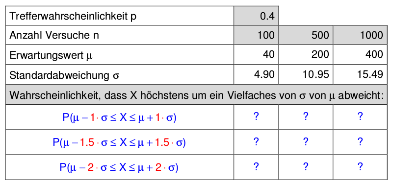

Aufgabe 7.8
Während der Erwartungswert $\mu$ einer binomialverteilten Zufallsgrösse $X$ einfach zu interpretieren ist als durchschnittliche Trefferzahl, liegt die Bedeutung der Standardabweichung $\sigma$ nicht sofort auf der Hand («Was sagt mir das $\sigma$?»). Das nachfolgende Experiment gibt hier eine Deutungshilfe.
- Es soll folgende Tabelle erstellt werden (TR, Excel oder
GeoGebra):

Trefferwahrscheinlichkeit $p$ und die Anzahl der Versuche sind gegeben (und können nachträglich variiert werden). Erwartungswert $\mu$ und Standardabweichung $\sigma$ werden jeweils anhand der Formeln berechnet.
Bestimmen Sie nun in der Tabelle die jeweilige Wahrscheinlichkeit, dass die Zufallsgrösse $X$ bei $n$ Versuchen höchstens um eine, 1.5 oder zwei Standardabweichungen von ihrem erwarteten Wert abweicht.
Beispiel: $p = 0.4$, $n = 500$ Versuche, also $\mu = 200$, $\sigma = 10.95$
Wahrscheinlichkeit, dass $X$ höchstens um 1.5 Standardabweichungen von $\mu$ abweicht:
\begin{align*} P( \mu - 1.5 \cdot \sigma \leq X& \leq \mu + 1.5 \cdot \sigma ) \\ & = P(200 - 1.5 \cdot 10.95 \leq X \leq 200 + 1.5 \cdot 10.95) \\ & = P(184 \leq X \leq 216) \approx 86.8\% \end{align*}
- Variieren Sie $p$ und vergleichen Sie in jeder Zeile die berechneten Wahrscheinlichkeiten miteinander. Beobachtung?
- Berechnen Sie für jede Kombination von n und p die Werte μ = np und σ = √(np(1-p))
- Bestimmen Sie die Intervalle [μ - k·σ, μ + k·σ] für k = 1, 1.5, 2
- Runden Sie die Intervallgrenzen auf ganze Zahlen
- Berechnen Sie P(a ≤ X ≤ b) mit der Binomialverteilung
(a) Erstellung der Tabelle:
Formeln für die Berechnung:
Beispielrechnung für p = 0.4, n = 500: \begin{align*} \mu &= 500 \cdot 0.4 = 200\\ \sigma^2 &= 500 \cdot 0.4 \cdot 0.6 = 120\\ \sigma &= \sqrt{120} \approx 10.95 \end{align*}
Berechnung der Sigma-Umgebungen:
Für die 1.5σ-Umgebung:
Vollständige Tabelle:
| $p$ | $n$ | $\mu$ | $\sigma$ | $P(|X-\mu| < \sigma)$ | $P(|X-\mu| < 1.5\sigma)$ | $P(|X-\mu| < 2\sigma)$ |
| 0.1 | 100 | 10 | 3.00 | 68.3% | 86.6% | 95.4% |
| 0.1 | 500 | 50 | 6.71 | 68.3% | 86.6% | 95.4% |
| 0.1 | 1000 | 100 | 9.49 | 68.3% | 86.6% | 95.4% |
| 0.3 | 100 | 30 | 4.58 | 68.2% | 86.6% | 95.4% |
| 0.3 | 500 | 150 | 10.25 | 68.3% | 86.6% | 95.4% |
| 0.3 | 1000 | 300 | 14.49 | 68.3% | 86.6% | 95.4% |
| 0.4 | 100 | 40 | 4.90 | 68.3% | 86.6% | 95.3% |
| 0.4 | 500 | 200 | 10.95 | 68.3% | 86.8% | 95.4% |
| 0.4 | 1000 | 400 | 15.49 | 68.3% | 86.6% | 95.4% |
| 0.5 | 100 | 50 | 5.00 | 68.3% | 86.4% | 95.4% |
| 0.5 | 500 | 250 | 11.18 | 68.3% | 86.6% | 95.4% |
| 0.5 | 1000 | 500 | 15.81 | 68.3% | 86.6% | 95.4% |
(b) Beobachtungen:
Erstaunliche Entdeckung: Unabhängig von den konkreten Werten von $n$ und $p$ ergeben sich nahezu konstante Wahrscheinlichkeiten!
Graphische Darstellung:
Praktische Bedeutung der 68-95-Regel:
- Qualitätskontrolle:
- Werte innerhalb $\mu \pm 2\sigma$: Normal
- Werte ausserhalb $\mu \pm 3\sigma$: Untersuchung nötig
- Statistische Tests:
- 95%-Konfidenzintervalle basieren auf der 2σ-Regel
- Signifikanzniveau 5% entspricht Werten ausserhalb 2σ
- Six Sigma:
- Prozessqualität mit Fehlerrate < 3.4 pro Million
- Basiert auf 6σ-Abweichungen
Im Video: Etappe 5 · Erwartungswert und Varianz bei 9:35